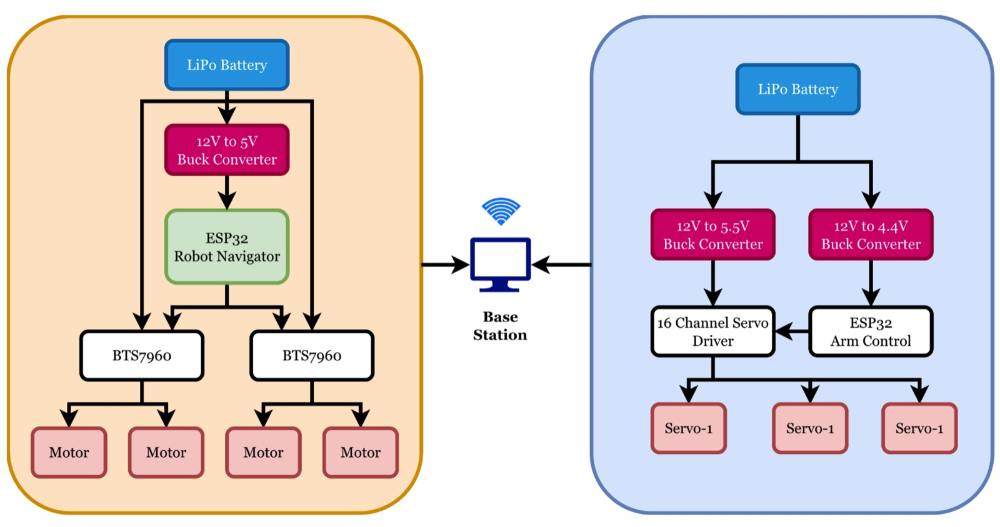
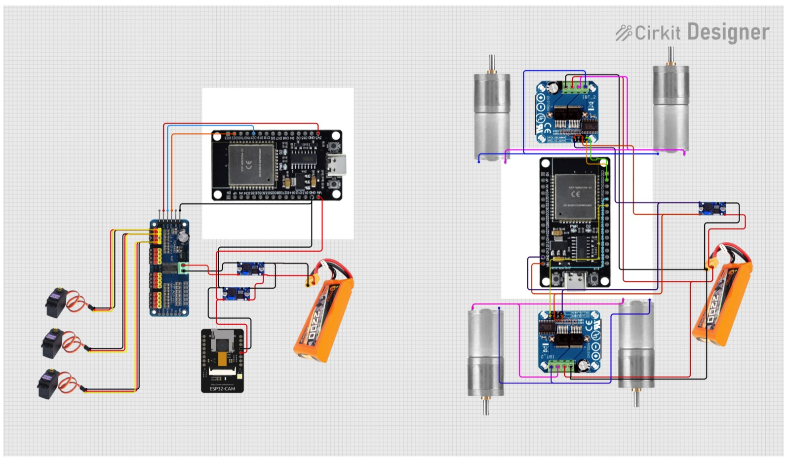

Autonomous Multi-Terrain Service Robot
A modular vision-guided autonomous robot: ArUco-marker navigation (±5 cm) plus a 2-DOF arm doing calibration-based visual-servoing pick-and-place, on a rugged dual-ESP32 platform.
Overview
An autonomous mobile robot that can both find its way to a target and pick things up — built as two independent modules: a differential-drive base for movement and a 2-DOF arm with a gripper for manipulation. Each module runs on its own ESP32 microcontroller and talks over WiFi to a central computer that handles all the vision and decision-making. The chassis is a rugged ~5 kg stainless-steel frame with deliberately mismatched wheel sizes (smaller front, larger rear) so it can cross gaps and uneven ground without getting stuck.
Autonomous navigation
For navigation the robot reads ArUco markers with its camera, works out each marker's 3D position and orientation, and converts everything into its own body frame so it knows exactly how far left/right and forward/back the target is. A layered controller then decides whether to rotate, drive forward, or do both — smoothed with PID control and rate-limiting so the motion stays steady instead of jittery. It reaches targets within about ±5 cm, with keyboard teleoperation and an instant emergency override always available.
Vision-guided manipulation
The arm uses position-based visual servoing, but instead of hand-deriving the arm's kinematics it learns a direct mapping from camera pixels to joint angles from a handful of manually-taught calibration points (radial-basis-function interpolation). Objects are located by colour in HSV space, and a small state machine runs Search → Approach → Grab → Lift, using proportional control with capped step sizes and a gentle, progressive grip so it grasps reliably.
Built for the real world
The two-microcontroller design isolates faults so a problem in one subsystem doesn't take down the other, WiFi links reconnect automatically, and the robot stops safely if it loses sight of its markers. Combined with the rugged steel build, balanced weight and low centre of gravity, it targets practical settings like warehouse item-handling, material transport and inspection.
By the numbers
Schematic & figures


Tech stack & key skills
Core tools, methods and skills demonstrated in this project: